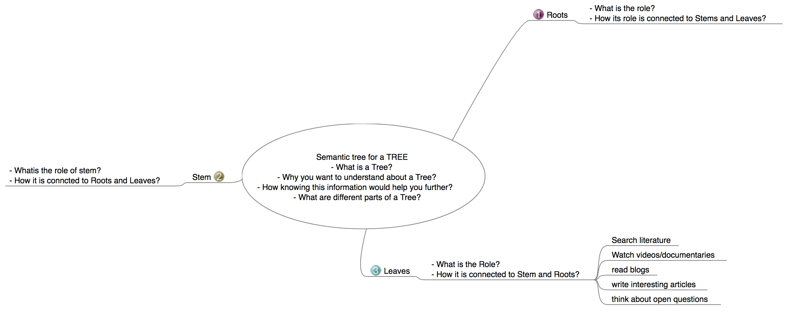

Hey, you!
Who me?
Yes, you. Seem so excited about starting your PhD?
Ofcourse. You know how many nights I burnt to get here?
That is exactly why I am here. I am your future-self who is six months into your PhD and I would like to give you some suggestions. Please keep them in mind during your PhD.
Suggestions? Meh..
Please, you have to listen..
Okay! Tell me
Research: Draw a semantic tree for every new concept you encounter
Let me explain it with a simple example. Say, you need to understand the anatomy & physiology of leaves and start your research work around the topic. You can’t directly jump onto literature on leaves and understand everything. First you need to know about tree, different parts of a tree, what role each part is performing in the life of a tree, how each part is connected to other. Then narrow down your focus onto leaves. Dig deeper. Probe the literature on what people tried to reveal about leaves, watch related videos/documentaries, read blog posts ..etc. Write down the open questions, know what data you have/need to solve one of those open and IMPORTANT questions.
Here is a semantic tree for above example to narrow down your focus from a broad context.

This is a simple example. You are going to work on one of the complex organs in human body, Brain. Be careful. Don’t just read. For every obscure statement, seek evidence from multiple sources. Don’t afraid to question.
“Effective questioning brings insight, which fuels curiosity, which cultivates wisdom” - Chip Bell
Failure: You will fail. Multiple times. But it is okay!
Yes. It is hard to digest when someone tells you in the face that you are going to fail. Remember that old but GOLD saying? “Failures are stepping stones to Success”. That is 101% true.
Sometimes the method you design to address the problem won’t work as you expected or is just not suitable for the question at your hand. Don’t worry. This is how you learn what works better for the problem. When you fail at something, don’t be hard on yourself. Laugh at your innocence. Do not try to fix it as soon as you realize it failed. Take some time for retrospection. Analyse step by step what you have done. Find at which stage you took a wrong step. Well, there is no obvious wrong step but is just not appropriate for the situation. Ask a question “How can you modify that procedure to work better” ?
Retrospection will be easy when you have documentation on what has been done. Do not forget to write down everything you are doing. Every single step. Do not ignore or do not procrastinate. A great anonymous once said “Documentation is a love letter you write to yourself”. Write it beautifully, so you can read it anytime you want.
Non-science: Do not forget what else you love other than science
I have seen you several times drawing cartoons, reading fiction novels, is that you? If yes, keep that habit. Never abandon what you love other than science. It gives you pleasure. Keep reading. Number of books on different subjects. Reading non-work related areas broadens your knowledge horizons. Do not ask why & how this helps with your PhD. You will understand. Thank me later. Develop writing as a habit. Write about various topics. Do not hesitate to share your failures through writing or public speaking. It helps other fellows. Let them know they are not the only ones.
Health & Family: Last but not least, Take care of your health
You are going to live away from your family, away from your friends, away from people you know, away from places you are familiar with. I know you spent overnights for various reasons with no effect on your health. But now it is different. You need to balance your physical and mental health. Follow a healthy diet.
“Good health is a crown on the head of a well person that only a sick person can see” - Robin Sharma
Do not be depressed when you fail. Do not get frustrated when things don’t work. Sometimes you will do nothing productive through out a complete day. It is okay. Just take a coffee and walk for a while.
Someone is going to break your heart. Do not complain. Respect their decision and move on. It is okay to break your heart a couple of times. Remember “The more it happens, the less it hurts”. Period. You can handle that. DO NOT EVER CONNECT YOUR EMOTIONS WITH ALCOHOL.
Talk to your family very frequently, more frequent than previous years. Do not pretend you are busy. It is the best medicine when you feel low. Talk to that friend of yours and discuss those stupid topics which do not make sense to anyone in this world, except you and your friend. Laugh a lot, stay healthy.
Have fun with your PhD. Make most out of it. Make memories !
Is that all?
Yes.
Okay, Thanks!